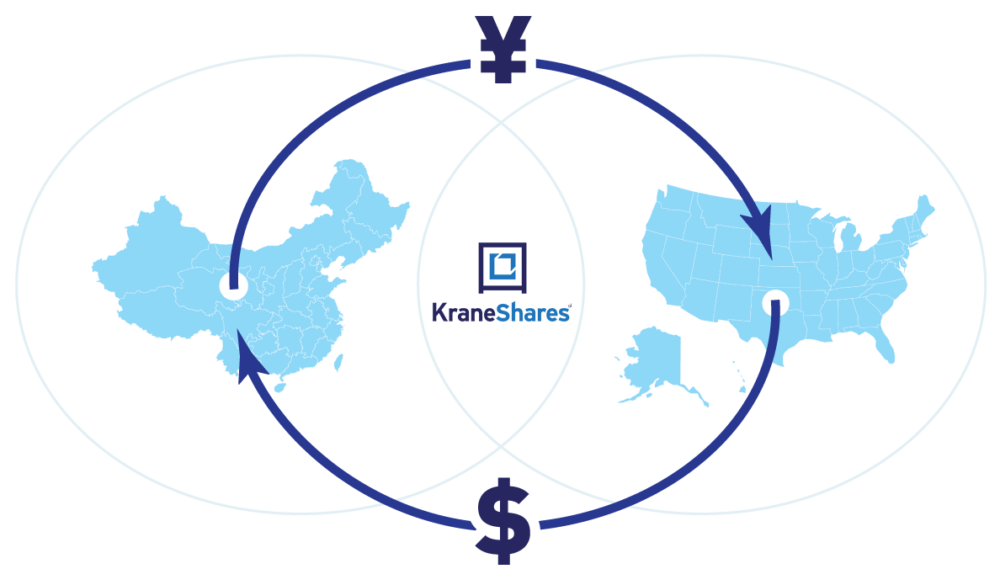
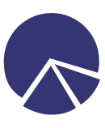

về chúng tôi
Chúng tôi tin tưởng chắc chắn rằng Trung Quốc và Hoa Kỳ hiện là những đối tác kinh tế quan trọng nhất trên thế giới. Các quỹ giao dịch trao đổi (ETF) của chúng tôi giúp các nhà đầu tư toàn cầu hiểu rõ hơn về thị trường Trung Quốc và nâng cao tầm quan trọng của thị trường này trong việc phân bổ tài sản. Với vai trò quan trọng của Trung Quốc trong việc giải quyết cuộc khủng hoảng khí hậu toàn cầu, quỹ ETF về biến đổi khí hậu của chúng tôi là sự mở rộng trọng tâm của chúng tôi vào thị trường Trung Quốc. Ngày nay, chúng tôi là một trong những nhà quản lý quỹ ETF về carbon/biến đổi khí hậu lớn nhất trên thế giới. Chúng tôi có chuyên môn sâu về thị trường phát thải carbon toàn cầu. Đối với loại tài sản quan trọng và mới nổi này, chúng tôi cam kết đóng vai trò cốt lõi trong nghiên cứu ngành và đào tạo nhà đầu tư, xây dựng bộ ba nghiên cứu, giáo dục đầu tư và sản phẩm. Ngoài ra, chúng tôi cung cấp một loạt các quỹ ETF tài sản có mối tương quan thấp, mở ra cho các nhà đầu tư những loại tài sản và chiến lược thường chỉ dành cho các nhà đầu tư tổ chức. Các quỹ ETF này thể hiện triết lý đầu tư dài hạn của chúng tôi với các đối tác và cố vấn đầu tư xuất sắc. Những chiến lược đầu tư khác biệt này có thể nâng cao đáng kể hiệu quả hoạt động của danh mục tài sản của nhà đầu tư.
sứ mệnh của chúng tôi
Tiếp tục mở cửa thị trường tài chính và thu hút thêm đầu tư quốc tế là những mục tiêu chính trong Kế hoạch 5 năm lần thứ 13 của Trung Quốc. Để đạt được mục tiêu này, với tư cách là một công ty Mỹ tập trung vào các cơ hội đầu tư tại Trung Quốc, Kingsoft đã nỗ lực hết sức để thúc đẩy hợp tác tài chính song phương giữa Trung Quốc và Hoa Kỳ và tăng cường sự tin cậy lẫn nhau giữa hai bên.

đối tác của chúng tôi
Chúng tôi có mối quan hệ hợp tác chặt chẽ với một số công ty quản lý tài sản lớn ở Trung Quốc, bao gồm Quỹ Boshi và Quỹ E. Đội ngũ và đối tác của chúng tôi đều là những chuyên gia đầu tư cấp cao đến từ người nước ngoài và Hoa Kỳ. Chúng tôi trình bày quan điểm phân tích địa phương của Trung Quốc cho các nhà đầu tư toàn cầu.
triết lý đầu tư
Chúng tôi tin rằng các nhà đầu tư toàn cầu nên sử dụng các công cụ minh bạch, chi phí thấp để đầu tư vào Trung Quốc và các thị trường mới nổi. Để đáp ứng nhu cầu của các nhà đầu tư, nhóm của chúng tôi dựa vào kinh nghiệm đầu tư chỉ số và thị trường toàn cầu cao cấp để cung cấp cho các nhà đầu tư toàn cầu những cơ hội đầu tư thụ động hoàn chỉnh hơn và tạo ra các công cụ đầu tư "Smart Beta*". Chúng tôi cam kết cung cấp cho các nhà đầu tư toàn cầu những giải pháp đầu tư đa dạng, chất lượng cao nhất, chi phí thấp.

danh mục đầu tư
Thị trường vốn của Trung Quốc có thể được chia thành hai khu vực: thị trường chứng khoán và thu nhập cố định "chỉ đầu tư địa phương" của đại lục và thị trường hải ngoại Hồng Kông và Hoa Kỳ nơi các nhà đầu tư quốc tế có thể đầu tư. Chúng tôi tin rằng việc tiếp cận phù hợp với tất cả các lĩnh vực đầu tư ở Trung Quốc sẽ dẫn đến sự đa dạng hóa có ý nghĩa và có khả năng cải thiện hiệu suất danh mục đầu tư của nhà đầu tư.
quá trình đầu tư
Khái niệm cốt lõi của chúng tôi đến từ kinh nghiệm sâu rộng của nhóm trong ngành quản lý đầu tư Hoa Kỳ và kiến thức thực tế từ các hoạt động thành công ở Trung Quốc. Những kinh nghiệm này khiến chúng tôi tin rằng đối với các nhà đầu tư toàn cầu, Trung Quốc sẽ là điểm tăng trưởng kinh tế mạnh mẽ và phù hợp để đầu tư đa dạng. Điều này sẽ không thay đổi trong thời gian tới. Do đó, chúng tôi tập trung vào các cơ hội đầu tư tại Trung Quốc và phát triển các mô-đun đầu tư dành cho các nhà đầu tư còn thiếu trong danh mục đầu tư của họ.
*Smart beta là một chiến lược đầu tư trong đó các nhà quản lý quỹ đầu tư thụ động vào một chỉ số khai thác những thành kiến hoặc sự thiếu hiệu quả có hệ thống có thể dự đoán được.